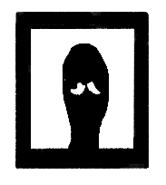
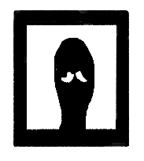
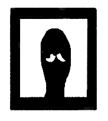
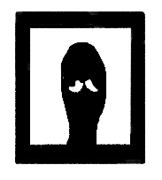
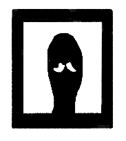

(◀ 돌아가기)
 지금 여러분이 이걸 읽고 계시다면 제가 무사히 마감을 치고 님들을 구경하며 웃고 있다는 뜻이겠지요? 허어엉 부탁해 미래의 나ㅠㅠㅠㅠㅠ") 


달빵님과 제가 열심히...열심히야 준비했지 근데 결과는 우리의 목숨을 믹서기로 가는듯한 느낌이에요
현재의 시각....3월30일 약 12시 넘어가기 전...여기까지만 완성됐다고하지만 저흰 알아요
오늘 새벽에 이거 '조져'버릴것을 알기에 의지가 충만해진다
달빵님 갈기 전문 찰빵님이에요..그럼 여러분 마지막 수학여행에서 좋은 추억 만들길 바랍니다ㅎ") 
